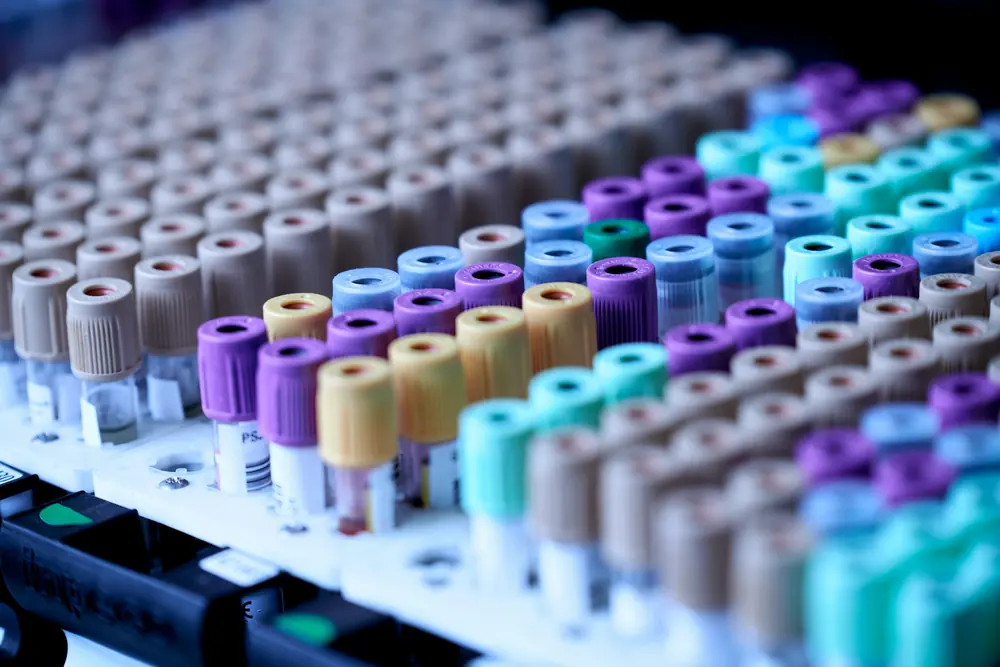

Laboratorio clínico
Exámenes de sangre, orina y heces en la misma clínica, con indicaciones de preparación claras y resultados en línea.

Nuestro laboratorio realiza los exámenes que su médico solicita con mayor frecuencia: hematología, química sanguínea, perfil de lípidos, orina y heces, entre otros.
Antes de venir, revise si su examen requiere ayuno. Encontrará las indicaciones en la sección de exámenes de este sitio.
Los resultados se entregan en línea o impresos, y su médico puede revisarlos en su próxima cita.
Cómo prepararse para sus exámenes
Siga estas indicaciones para que sus resultados sean confiables. Si tiene dudas, llámenos antes de venir.
Hematología completa
No requiere ayuno.
Resultados: el mismo día
Glucosa en ayunas
Ayuno de 8 a 12 horas. Puede tomar agua pura.
Resultados: 2 horas
Perfil de lípidos
Ayuno de 12 horas. Evite bebidas alcohólicas 24 horas antes.
Resultados: 24 horas
Hemoglobina glicosilada (HbA1c)
No requiere ayuno.
Resultados: 24 horas
Orina completa
Primera orina de la mañana, en frasco estéril que puede recoger en el laboratorio.
Resultados: el mismo día
Heces
Muestra reciente en frasco limpio, entregada en las 2 horas siguientes.
Resultados: 24 horas
Ultrasonido abdominal
Ayuno de 6 a 8 horas. Si toma medicamentos, consulte a su médico antes del estudio.
Resultados: informe el mismo día
Ultrasonido pélvico
Vejiga llena: beba de 4 a 6 vasos de agua una hora antes y no orine hasta el estudio.
Resultados: informe el mismo día
¿Necesita una cita?
Solicítela en línea, escríbanos por WhatsApp o llámenos.
Cómo llegar a la clínica Google Maps